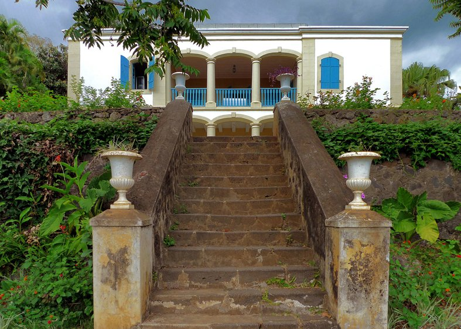
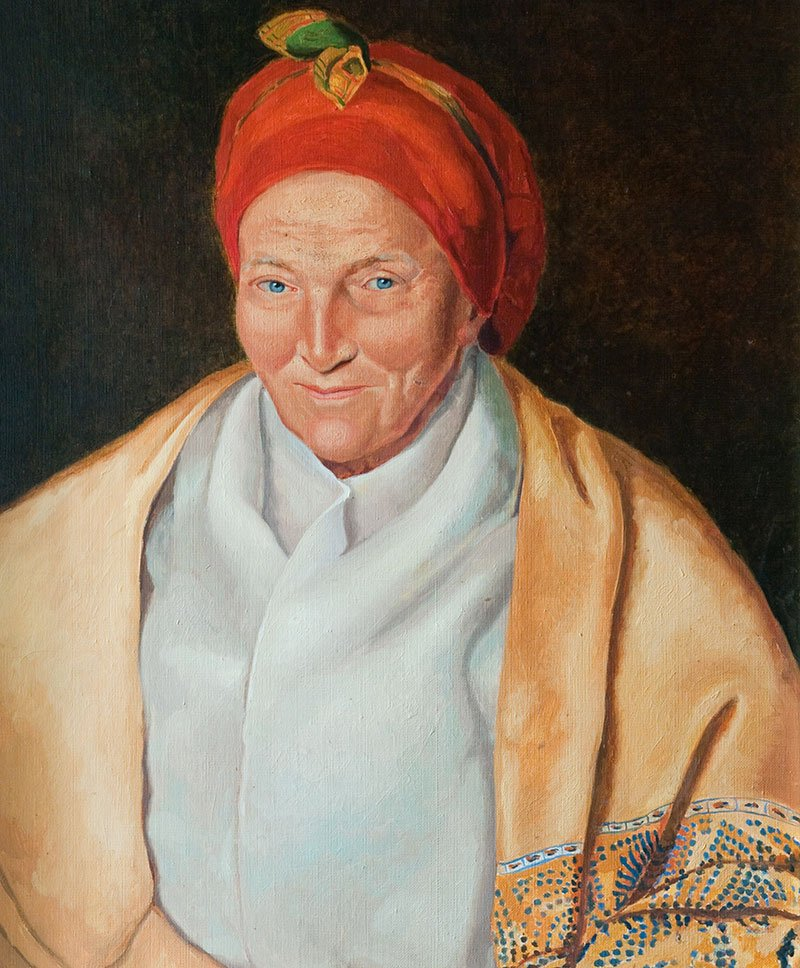
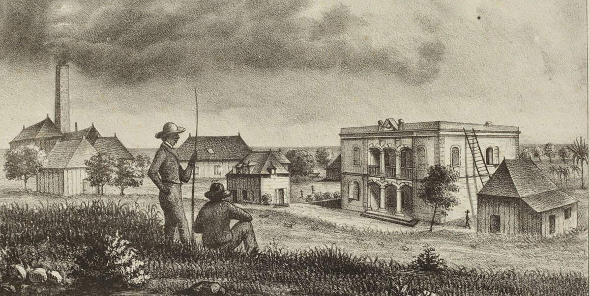

Élisabeth Desprez, dite Madame Desbassayns — la femme la plus puissante et la plus controversée de l'histoire de La Réunion.
Élisabeth Desprez, née en 1755, est connue sous le nom de Madame Desbassayns après son mariage avec Henri Paulin Panon Desbassayns, riche propriétaire terrien. Elle devient rapidement l'une des personnalités les plus influentes — et les plus redoutées — de l'île Bourbon.
Gérante de l'une des plus grandes fortunes sucrières de l'île, elle dirige avec une poigne de fer ses vastes domaines de Saint-Gilles-les-Hauts. Sa réussite économique colossale repose entièrement sur le travail forcé de centaines d'esclaves, faisant d'elle une figure centrale du système esclavagiste réunionnais.
Son héritage est profondément ambigu : d'un côté une femme d'affaires remarquable pour son époque, de l'autre une exploiteuse impitoyable dont les excès de cruauté envers les esclaves ont laissé des traces durables dans la mémoire collective de l'île.



Le domaine Desbassayns est l'une des plus grandes sucreries de l'île Bourbon au XIXe siècle. Situé à Saint-Gilles-les-Hauts, il comprend des centaines d'hectares de canne à sucre, une sucrerie industrielle et les cases de centaines d'esclaves.
À la mort de son mari, Madame Desbassayns prend seule les rênes du domaine et en fait l'une des exploitations les plus productives de l'île. Sa gestion rigoureuse — certains diraient impitoyable — lui permet d'accumuler une fortune colossale, faisant d'elle la plus grande propriétaire terrienne de La Réunion de son époque.
Les témoignages de l'époque décrivent des conditions de travail extrêmement dures sur ses domaines. Plusieurs esclaves auraient subi des châtiments particulièrement sévères, ce qui lui valut une réputation de cruauté qui traversa les siècles.
Après l'abolition de l'esclavage en 1848 — à laquelle elle ne survit pas, décédant deux ans avant en 1846 — le domaine Desbassayns entre dans l'histoire comme le symbole d'une époque révolue mais dont les cicatrices restent vives.
La villa Desbassayns, visible dans notre galerie, est aujourd'hui classée monument historique. Elle abrite un musée qui présente la vie coloniale du XIXe siècle et la mémoire de l'esclavage à La Réunion. Chaque année, de nombreux Réunionnais s'y rendent pour commémorer le 20 décembre 1848, date de l'abolition sur l'île.
Son personnage reste profondément ambigu dans la mémoire collective : femme d'exception dans un monde dominé par les hommes, mais au prix d'une exploitation humaine que l'histoire ne saurait minimiser.
"Elle était redoutée de tous — maîtres et esclaves confondus. Son nom seul faisait trembler le nord de l'île."— Témoignages de l'époque coloniale, île Bourbon, XIXe siècle
La villa Desbassayns à Saint-Gilles-les-Hauts est aujourd'hui un musée classé monument historique, ouvert au public et dédié à la mémoire de la période coloniale.
Le domaine comprenait l'une des sucreries les plus modernes de l'île. La canne à sucre était la richesse principale de Bourbon, cultivée par des milliers d'esclaves.
Plus de 300 esclaves travaillaient sur ses domaines. L'abolition de l'esclavage à La Réunion intervient le 20 décembre 1848, commémoré chaque année comme fête nationale.
Son histoire est aujourd'hui enseignée dans les écoles réunionnaises comme symbole de la période esclavagiste et de la nécessaire confrontation à ce passé douloureux.